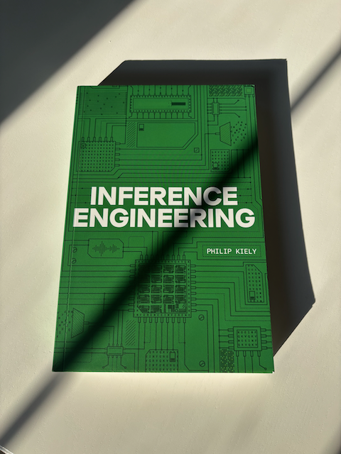

inference
Book Review, Inference Engineering
Inference Engineering by Philip Kiely is an excellent resource and if you think you need to read it, you probably need to read it.
I recently bought a copy of “Inference Engineering” by Philip Kiely. The book is available for free from BaseTen, but the physical copy is beautiful and, in my opinion, completely worth it. If there were a hardback I’d buy it tomorrow.

The top line of my review is: I desperately wish I could ship this book back to myself in 2023.
My background: I’m a research scientist, but I was also the head of ML at Pattern Data, where we scaled document processing a billion+ pages. There is a lot of material in the book that I was already familiar with from hard-earned lessons or mistakes. Having a single reference work to handle all of that would have helped me avoid those mistakes. And probably make a fun set of new ones!
If your job touches ML inference at all, you should probably read this book. Save yourself from the mistakes that I made! It’s got immense technical breadth, covering everything from “when should I choose vLLM or SGLang or TensorRT?” to “how do I efficiently scale inference as a service grows?”
My recommendation for how to read the book is to read it through once to familiarize yourself with all of the content, and then revisit the specific most interesting chapters. The book is largely organized as a reference work, with chapters being largely independent. If there are sections that don’t apply to you, you can probably skip them.
Use the chapters you revisit as a jumping off point to the broader literature (there’s a really nice set of “papers to read next” organized by topic in the back of the book).
I personally really enjoyed the “Techniques” chapter, where he covers quantization, speculative decoding, disaggregation, etc. because those are things I think about in the day-to-day. It contains the best high-level description of EAGLE speculative decoding that I’ve read.
I only have three minor criticisms:
-
At times I was unsure what the level of the intended audience was. For example, early on he takes care to explain linear layers and activation functions. I’d probably only recommend the book to an audience already fluent in those concepts.
-
I really wish the book were longer. Philip is really good at distilling and explaining concepts! A few concepts would have been nice to cover in depth, like FlashAttention or estimating model FLOPS and HFU.
-
I wish there were a hardcover.
Will this knowledge be obsolete in 6 months?
I got asked this when discussing the book with a friend, so it may be worth addressing. Short answer: Nope!
Long answer: I’ll let Philip speak for himself on this:
Like LLMs, books have knowledge cutoffs. […] While details will change, the principles, concepts, and foundational technologies in this book provide a strong background on inference engineering that will serve you well for years to come.
However, in a fun sign of just how fast the world of AI changes, consider this passage for 6.4.1:
TTS models are rarely used outside of real-time applications. However, if you do end up with a batch use case like backfilling a large corpus of documents to audio for improved accessibility, note that tts models don’t do well with long inputs, speech starts to degrade after 30 seconds or so.
Now, consider this tweet:
The first 100 seconds of the Inference Engineering audiobook, narrated by a voice clone built by @rimelabs.
— Philip Kiely (@philipkiely) June 2, 2026
P.S. the video was also made using an AI-built script. Input is a PNG and a text file, script handles narration, bounding boxes, captions, and final video export. pic.twitter.com/rs6RzBrCZR
TTS is getting much better quite quickly!
What Should I Read Next?
I think this book is a very valuable jumping off point, and what you should read next depends on your interests and needs. For starters, there’s a really nice set of “papers to read next” organized by topic in the back of the book. I’ve got a few to add to that, depending on what you want to focus on.
I’m interested in training LLMs
This one I have a great answer for!
In my opinion the single best book you could read next is HuggingFace’s “Ultra Scale Training Playbook.” It’s packed with code examples, visuals, and tons of great explanations about how you scale the training of models. It’ll help you get deeply familiar with concepts like Tensor/Sequence/Pipeline/Context/Data Parallelism, the ZeRO series of optimizers, and the difficulties and trade-offs you have to make as models scale.
This book was too in the inference weeds for me
Chip Huyen’s “AI Engineering” seems like a good fit, in that case?
I want to dig deeper into GPUs
Here we’re going a little further outside of my comfort zone. The Modal GPU Glossary contains an incredible amount of breadth, but is probably best used as a reference rather than a standalone book. I’m going to be working through some GPU programming books in the near future where I can provide a more thorough review. The one I saw most highly recommended was: “CUDA Programming: A Developer’s Guide to Parallel Computing with GPUs”
I want to learn more about TECHNIQUE
If TECHNIQUE=”inference engines”, then the nano-vllm codebase is a really neat place to start. I don’t know of any good books on the topic (outside of this one), but there are lots of good vLLM/PagedAttention explainers and pedagogical codebases like nano-vllm or Mini-SGLang.
If TECHNIQUE=”speculative decoding”, then the vLLM speculative decoding docs are very good!
If TECHNIQUE=”quantization”, then ngrok’s Quantization From the Ground Up is a good resource. I also enjoyed What Every Computer Scientist Should Know About Floating Point Arithmetic, a 35-year-old paper from Xerox PARC.
None of the above apply to me!
Feel free to @ me on X or DM me and ask for recommendations!